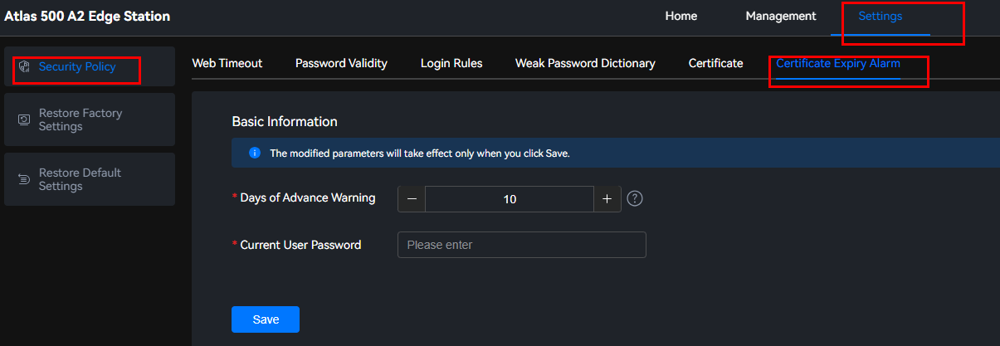

Setting a Certificate Expiry Alarm
- Choose Settings > Security Policy > Certificate Expiry Alarm.Figure 1 Certificate expiry alarm
 - Set the number of days to generate an alarm in advance before a certificate is about to expire.
You can click the text box to manually enter the number of days.
Specifically, you can click
 to set the number of days. The minimum value is 7. The value is incremented by one day each time you click
to set the number of days. The minimum value is 7. The value is incremented by one day each time you click  and decreases by one day each time you click
and decreases by one day each time you click  .
.
The value ranges from 7 to 180, in days. The default value is 10.
For security purposes, set a proper validity period and change the certificate periodically.
- In the Current User Password text box, enter the password of the current user.
- Click Save.
A message is displayed, indicating that the alarm time for certificate expiration has been set successfully.